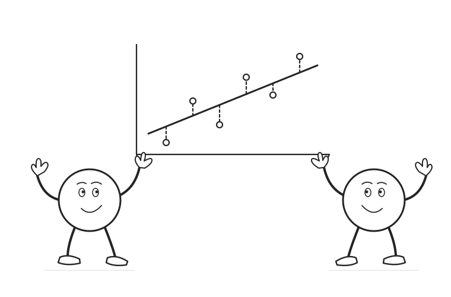

06 / Causal machine learning
Meta-learners: DR and R
Correct the target. Or residualize the loss.
Use doubly robust pseudo-outcomes or an orthogonal residual loss to learn a conditional effect function.
Scroll to begin
Move from an AIPW average to a DR effect regression. Then build the R-loss, examine overlap and orthogonality, and separate effect fitting from evaluation.
Protect the estimating step.
Still learn the effect function.
DR and R learners connect flexible nuisance predictions to a second learning problem. Their protections do not establish identification, remove limited overlap, guarantee a well-chosen effect model, or supply automatic confidence intervals for an entire CATE curve.
Read the complete explanation, calculations, and assumptions ↗
Sources and further reading
- Kennedy (2023). Towards optimal doubly robust estimation of heterogeneous causal effects.
- Nie and Wager (2020). Quasi-oracle estimation of heterogeneous treatment effects.
- Künzel, Sekhon, Bickel, and Yu (2019). Meta-learners for estimating heterogeneous treatment effects using machine learning.
- Chernozhukov et al. (2018). Double/debiased machine learning for treatment and structural parameters.
The shared example contains 80 constructed observations at five engagement values. Each value has 16 observations; treatment counts match the stated propensities and outcome noise is balanced within each treatment arm. The conditional effect is 6−4x. Small least-squares and penalized least-squares fits are actually calculated; they illustrate learning architectures, not a ranking of methods on research data. Later sensitivity examples are identified separately.